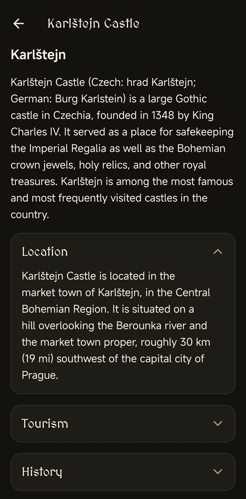
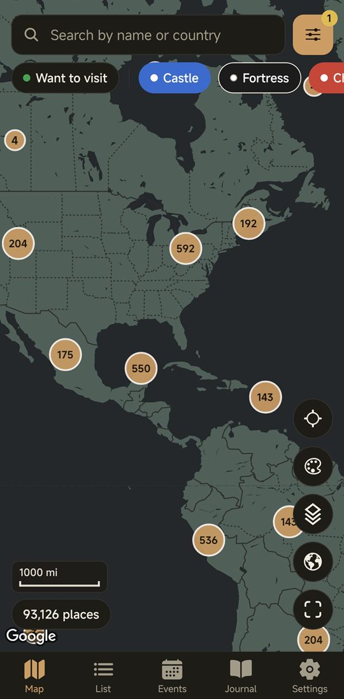

Замки, шато, фортеці та археологічні пам’ятки на одній карті
Позначайте місця, які ви відвідали, читайте їхню історію та ведіть власний щоденник замків. Без реклами, без облікового запису, без стеження.
Застосунок для Android. Безкоштовно в Google Play.
- 93 000+місць
- 190країн
- 14мов
- 0реклами й облікових записів
Що вміє Eldoria
Одна карта, шість типів місць
Замки, фортеці, палаци та шато, садиби, історичні міста й села, археологічні пам’ятки. Фільтруйте за типом, країною, станом, Всесвітньою спадщиною ЮНЕСКО та відвідуванням. Спочатку на карті показано замки й фортеці; інші типи додайте у фільтрах.
Карта в стилі пергаменту
Віддаліть карту — і місця групуються в пронумеровані кружечки. Наблизьте її — і кожне місце отримає власний середньовічний значок, а на переповнених ділянках — крапку. На переповнених ділянках першими малюються найчитаніші місця.
Поруч зі мною
Найближчі місця з відстанями та за бажанням сповіщення, поки застосунок відкритий. Ваше приблизне місцезнаходження залишається на телефоні.
Читайте історію
Відкрийте місце й читайте його статтю Wikipedia просто в застосунку, будь-якою з 14 мов, якщо стаття існує, зокрема про історію та легенди. Фото беруться з Wikimedia Commons із зазначенням автора.
Ваш щоденник замків
Позначайте відвідування з датою, додавайте оцінку зірками, нотатки та до трьох фото. Додавайте в закладки місця, які хочете відвідати. Переглядайте відвідування за країнами й типами. Експортуйте файл резервної копії та відновіть його на новому телефоні.
Середньовічні події
Список майбутніх ярмарків, турнірів і фестивалів в обраних вами країнах із посиланням на сторінку організатора та на місце на карті.
Застосунок на знімках
Знімки екрана застосунку для Android (інтерфейс англійською).

Наблизьте карту — і кожне місце отримає власний значок. Торкніться місця, щоб побачити його картку. 
Місце: фото із зазначенням автора, тип, стан, час побудови та розташування. 
Стаття Wikipedia всередині застосунку, з історією та легендами. 
Легенда карти: колір показує тип, а розмір і вицвілість — стан. 
Майбутні середньовічні події. 
Ваш щоденник: відвідування за типом і країною та місця, які ви хочете відвідати. 
Шість стилів карти, які перемикаються однією кнопкою. 
Супутниковий стиль. Після віддалення місця об’єднуються в пронумеровані кружечки. 
Позначте місце як відвідане з датою або збережіть його у списку місць, які хочете відвідати. 
Після віддалення місця об’єднуються в пронумеровані кружечки. Тут: Європа та Північна Африка. 
Загальний вигляд: Північна та Південна Америка. 
Замок в Австрії: фото із зазначенням автора, тип і стан. 
Замок у Словаччині: фото, тип, стан і вік.
Як читати карту
Колір показує тип місця. Форма й розмір показують, що відомо про його стан.
Великий і суцільний: збережений, відреставрований або відбудований.
Лише контур: стан невідомий.
Малий і блідий: руїни або знищений.
Шість типів місць
- Замок
- Фортеця
- Палац або шато
- Садиба
- Історичне місто або село
- Археологічна пам’ятка
Стан береться з Wikidata, Wikipedia, Wikimedia Commons та DBpedia. Джерело вказує його приблизно для 23 % місць; ще для приблизно 11 % він виведений і позначений як неперевірений. Решта залишаються некласифікованими.
Майбутні середньовічні події
Той самий список, який застосунок показує на вкладці «Події». Його складають вручну на основі власних оголошень організаторів, і наразі він охоплює лише кілька країн. Запропонуйте подію через розділ «Зв’язок» у застосунку.
- Завантаження подій…
Звідки беруться дані
Eldoria поєднує публічні дані. Записи про місця можуть бути неповними або містити помилки.
- Місця й назви
- Wikidata (CC0).
- Стан
- Wikidata, категорії та інфобокси Вікіпедії, категорії Wikimedia Commons і дані інфобоксів з DBpedia (CC BY-SA). Якщо жодне з них його не вказує, частину станів виведено й позначено як неперевірені; решта залишається некласифікованою.
- Які місця показуються першими
- Перегляди статей Wikipedia про ці місця за 60 днів до збирання даних (дані Wikimedia про перегляди сторінок, CC0).
- Статті
- Wikipedia (CC BY-SA 4.0). У застосунку статті скорочено, з посиланням на оригінал.
- Фото
- Wikimedia Commons; для кожного фото вказано автора та ліцензію.
- Карта
- Google Maps.
- Оформлення
- Значки маркерів із пакета Fantasy RPG GUI від Artsystack; шрифт заголовків — MedievalSharp від wmk69 (SIL Open Font License).
Дані на цій сторінці актуальні станом на листопад 2026 р..
Запитання та відповіді
Чи безкоштовний застосунок Eldoria?
Так. У ньому немає реклами, покупок і облікового запису.
На яких пристроях він працює?
На Android. Застосунок доступний у Google Play. Версії для iPhone немає.
Чи працює він без інтернету?
Для карти, статей і фото потрібне з’єднання. Ваші відвідування, оцінки, нотатки й фото зберігаються на телефоні, а останній завантажений список подій залишається доступним для перегляду офлайн.
Де зберігаються мої відвідування та відгуки?
Лише на вашому телефоні. Розробник їх ніколи не отримує. Ви можете експортувати файл резервної копії та відновити його на іншому телефоні.
Чи використовується моє місцезнаходження?
Лише якщо ви відкриєте «Поруч зі мною» і дозволите це, і лише приблизно. Воно зчитується на телефоні, поки застосунок відкритий, щоб упорядкувати місця за відстанню; застосунок його не зберігає й не надсилає. Докладніше: Політика конфіденційності.
Чому так багато місць «Не класифіковано»?
Чи збережене місце, відновлене, відбудоване чи є руїнами, публічні джерела вказують лише приблизно для 23 % місць. Для частини решти Eldoria виводить стан (наприклад, за типом об’єкта) і позначає його як неперевірений; якщо й це неможливо, місце залишається некласифікованим.
Місце вказано неправильно або його немає. Що робити?
У застосунку відкрийте Налаштування > Зв’язок або напишіть на mythicforgeinteractive@gmail.com. Дані походять із Wikidata, тому виправлення, внесені там, потрапляють у застосунок із наступним оновленням даних.
Чи можна запропонувати подію?
Так, через ту саму форму «Зв’язок». Події додаються вручну на основі власних оголошень організаторів.